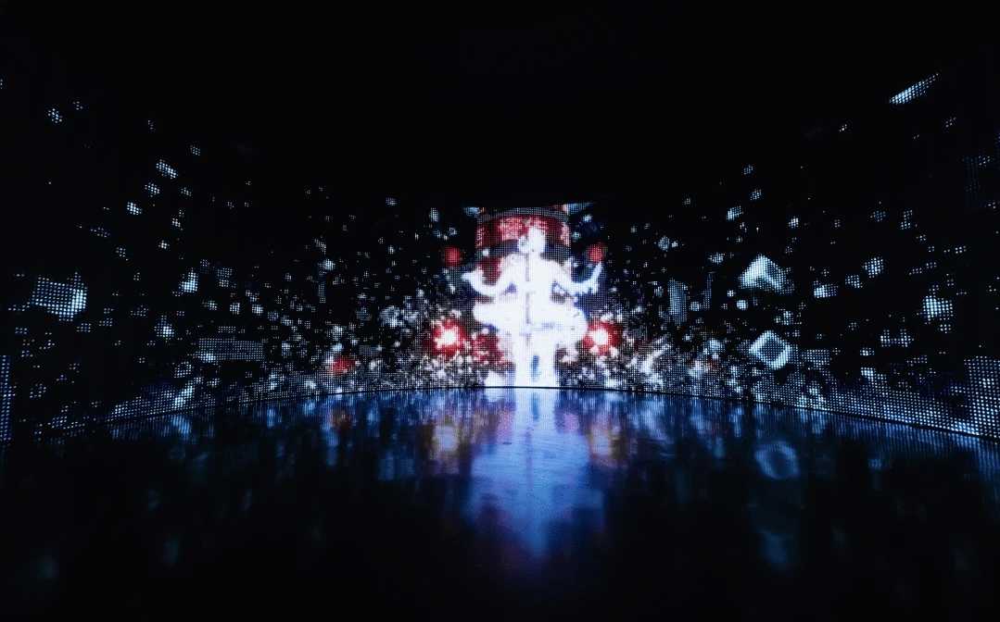
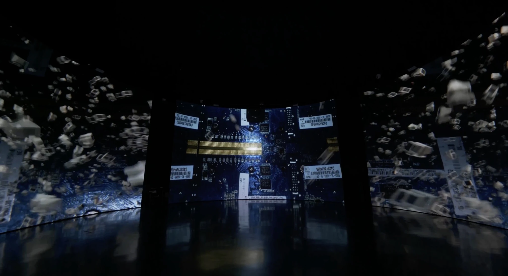
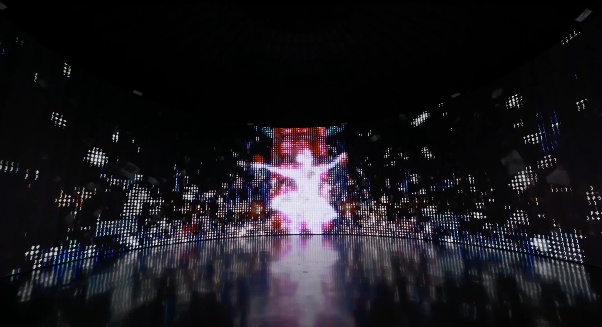
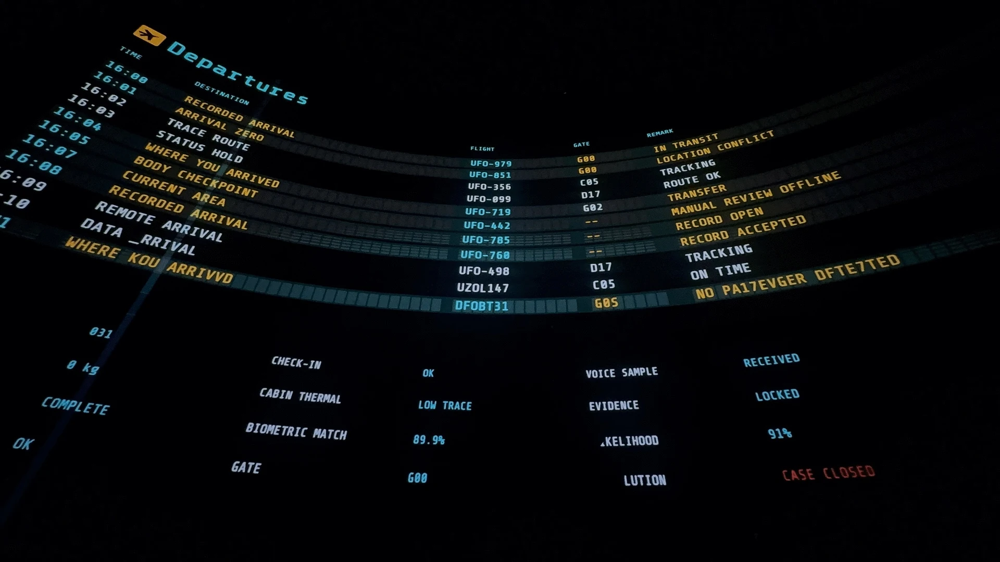
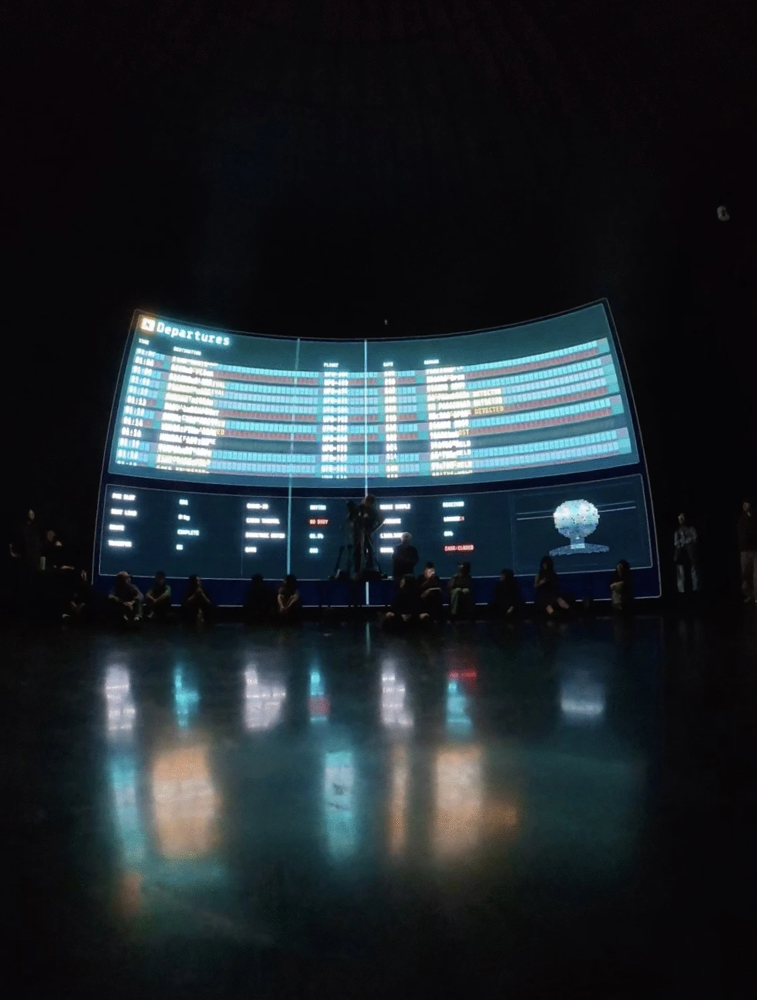
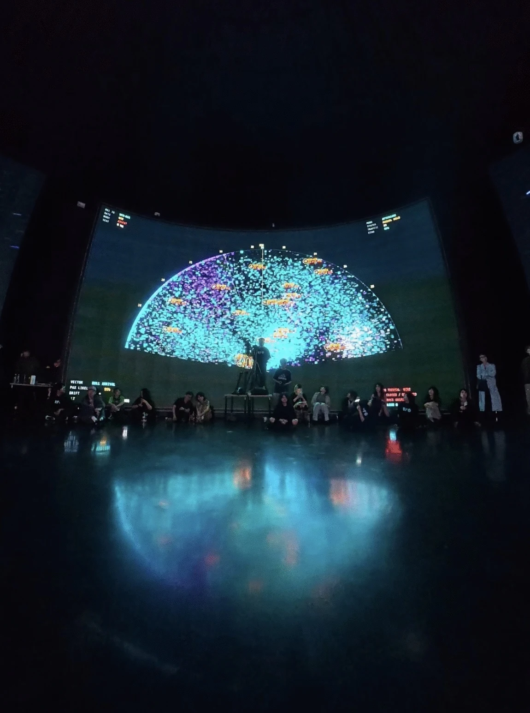
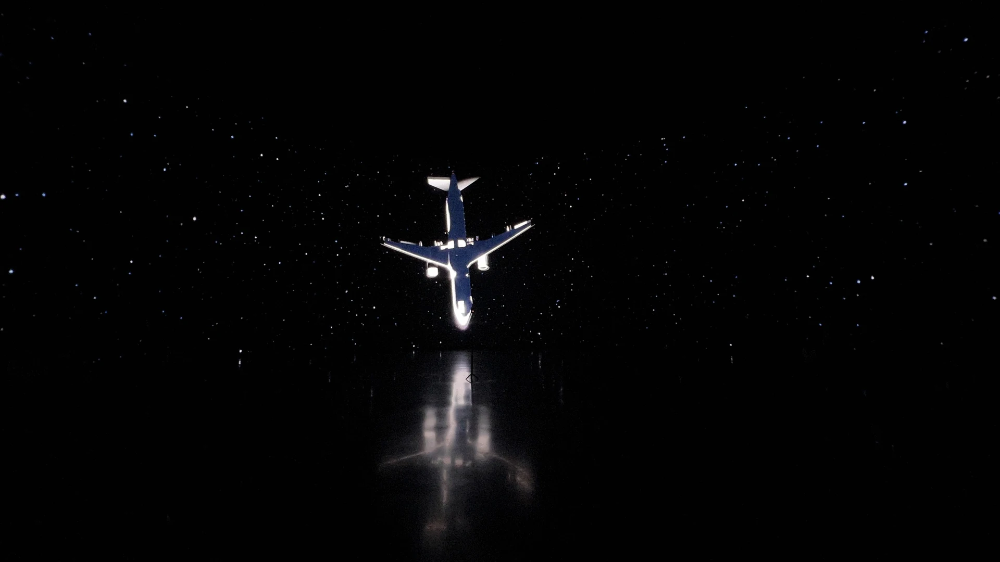
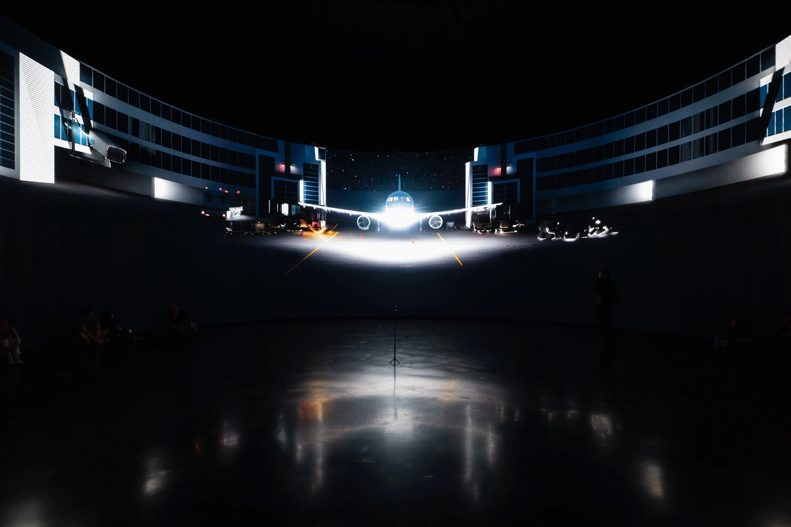

CONTROL CLUB / MISSING SIGNALS 是围绕环形矩阵屏幕空间持续发展的场域化视听作品系列。两件作品分别从数字世界构建与信号断裂出发，结合实时三维、多屏编排、声音、互动和观众动线组织空间中的观看。CONTROL CLUB and MISSING SIGNALS form an evolving series of site-specific audiovisual works for a circular matrix-screen venue. One builds a realtime digital world; the other turns signal loss into a multi-screen language. Both are composed around screen geometry, sound, interaction and audience movement.
环形矩阵屏幕空间。A circular matrix-screen venue.
内容围绕可进入的圆形内圈、主环幕、副屏和观众移动区域进行设计。不同屏幕承担不同信息层级，画面切换同时考虑观众转身、移动及视线变化。
Content is composed across the navigable inner circle, the main curved screen, secondary displays and the audience circulation zone. Each screen carries a distinct layer of information, with transitions designed around turning bodies, movement and changing sightlines.
游戏引擎实时生成的沉浸式视听作品，通过完整数字世界、多屏切换和空间调度组织观看。A game-engine-driven immersive audiovisual work, structured through a continuous digital world, multi-screen transitions and spatial choreography.



CONTROL CLUB
《CONTROL CLUB》由游戏引擎实时生成。办公桌延伸为高速信息通道，芯片表面转化为持续运转的算法工厂，工作界面、文件窗口和机械结构被放大、拆解并重新组合，形成关于效率、欲望与控制的数字景观。
CONTROL CLUB is generated in realtime through a game engine. Desks extend into high-speed information channels; chip surfaces become continuously operating algorithmic factories. Work interfaces, file windows and mechanical structures are enlarged, dismantled and recomposed into a digital landscape of efficiency, desire and control.
画面依据现场屏幕结构在主屏、副屏与内圈之间切换，并通过熄屏、闪烁、明暗变化和声音节奏引导观众转身与移动。观众动作可进一步影响粒子、灯光和视觉强度，使现场状态保持实时变化。
The work moves between the main, secondary and inner displays. Blackouts, flashes, shifts in brightness and sound cues prompt the audience to turn and move through the space. Audience motion can also affect particles, lighting and visual intensity, keeping the environment responsive throughout each presentation.
画面中断、信息延迟、噪点、错位和重复被转化为跨屏幕的内容语言。Interruption, latency, noise, displacement and repetition become a compositional language across the screens.





MISSING SIGNALS
《MISSING SIGNALS》从信号丢失出发，将画面中断、信息延迟、噪点、错位和重复转化为视觉材料。作品关注屏幕如何塑造信息接收，以及图像在传输不完整时如何被重新理解。
MISSING SIGNALS begins with signal loss, using interruption, latency, noise, displacement and repetition as visual material. The work examines how screens shape the reception of information, and how an image is reinterpreted when transmission becomes incomplete.
画面与声音被拆分到不同屏幕和时间段中，再通过节奏、切换与视听同步重新接续。观众需要在闪现的图像、声音片段和视觉线索之间建立联系，技术故障由此成为空间叙事的组成部分。
Image and sound are distributed across different screens and moments, then reconnected through pacing, switching and audiovisual synchronisation. The audience builds relationships between brief images, sound fragments and visual clues, turning technical failure into part of the spatial narrative.
世界构建与信号编排。World-building and signal composition.
两件作品共享同一套场地逻辑，却采用不同的内容结构。《CONTROL CLUB》通过实时场景、连续空间和观众反馈建立完整数字世界；《MISSING SIGNALS》以断裂、延迟和跨屏接续组织观看。系列由此形成两种相互对应的空间叙事方式。The two works share the same venue logic while using different content structures. CONTROL CLUB creates a coherent digital world through realtime scenes, continuous space and audience feedback. MISSING SIGNALS organises attention through fragmentation, latency and transitions across screens. Together they establish two complementary approaches to spatial narrative.
针对场地重新编排。Recomposed for each venue.
内容可根据屏幕数量、尺寸、比例、观众动线和互动条件重新编排，适配沉浸式展览、品牌发布、舞台视觉及公共文化空间。
The content can be recomposed around the number, scale and ratio of screens, audience circulation and available interaction systems, for immersive exhibitions, brand launches, stage environments and public cultural spaces.
- 系列Series
- 环形矩阵屏幕视听作品系列Circular Matrix-Screen Audiovisual Series
- 作品Works
- CONTROL CLUB / MISSING SIGNALSCONTROL CLUB / MISSING SIGNALS
- 场地Venue
- UFO Terminal，上海UFO Terminal, Shanghai
- VIRTURA 职责VIRTURA Role
- 概念与视觉世界构建、实时三维内容、多屏编排、互动逻辑、声音协作与现场校准Concept and visual world-building, realtime 3D content, multi-screen direction, interaction logic, sound collaboration and on-site calibration